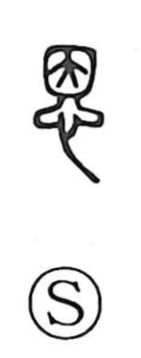

恩

Uncategorized
Kun: | On: on
grace ・ favor ・ kindness
Explanation
恩 combines 因 as its phonetic core with 心, the heart. Shirakawa explains 因 as the form of a cushioned mat or bedding (the 茵席 on which one reclines)—an everyday object, constantly used and familiar. When the heart is added to this image of something that has long given comfort, the character comes to express a tender, cherishing feeling: the love and affection one receives. Thus 恩 conveys received kindness or favor, with 因 serving as the phonetic element reflected in the on reading.